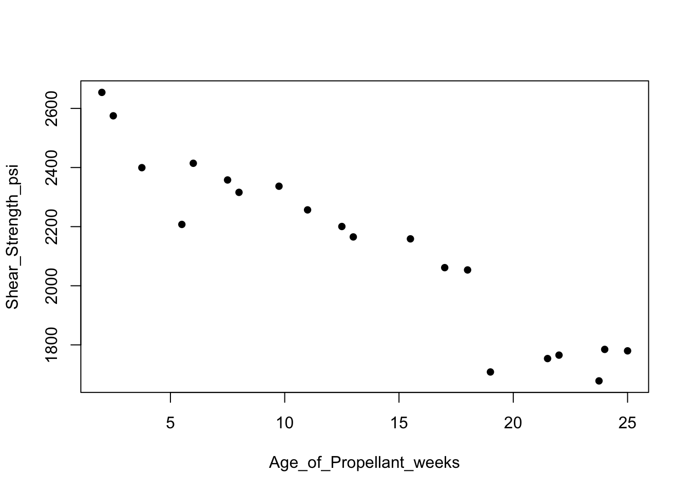
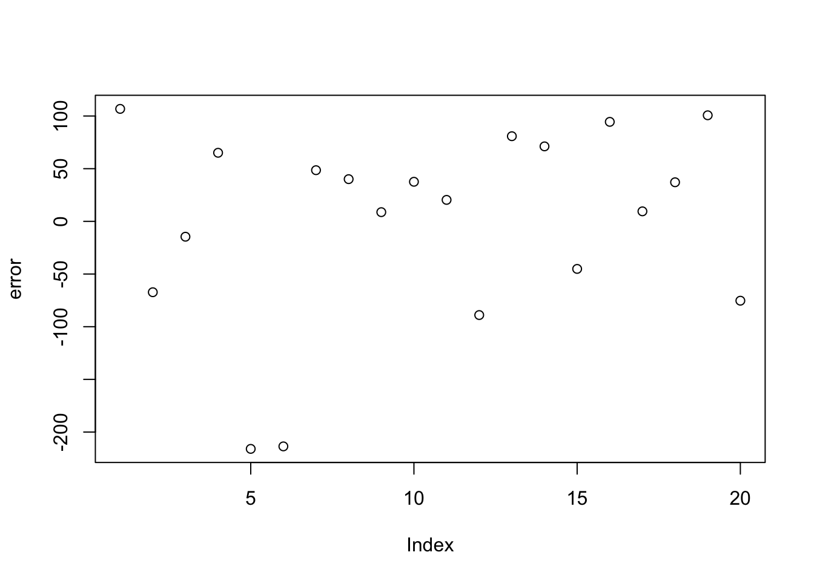
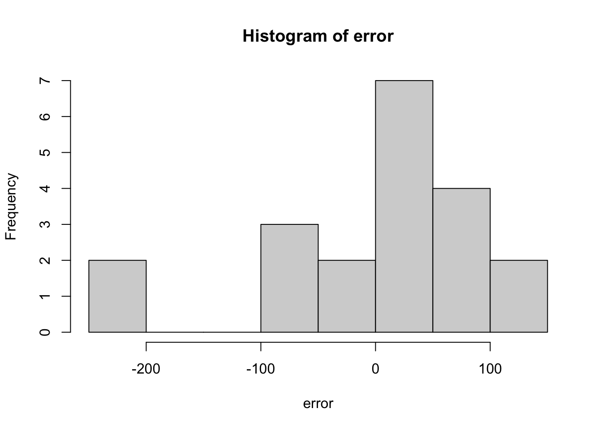
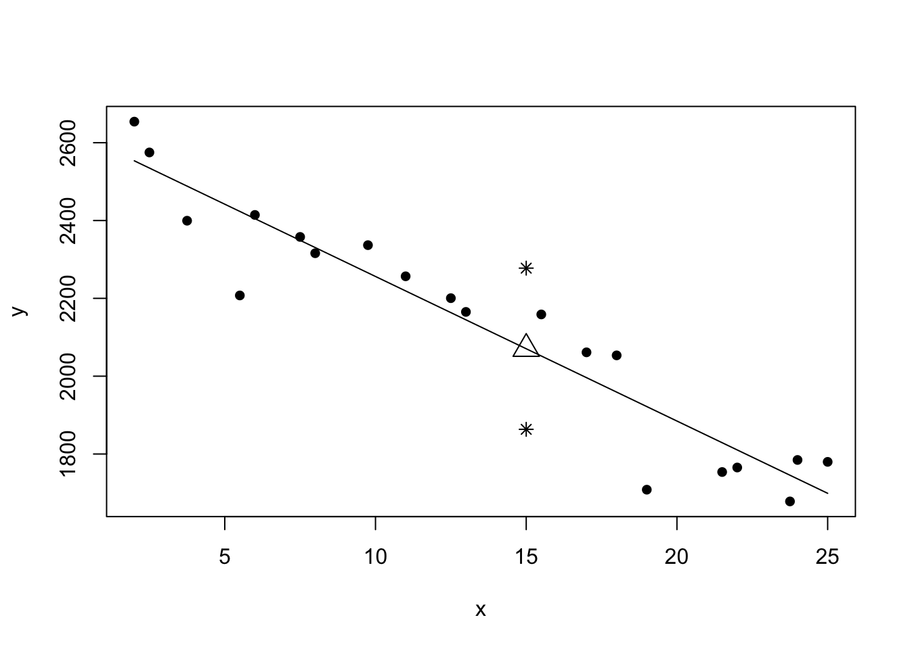
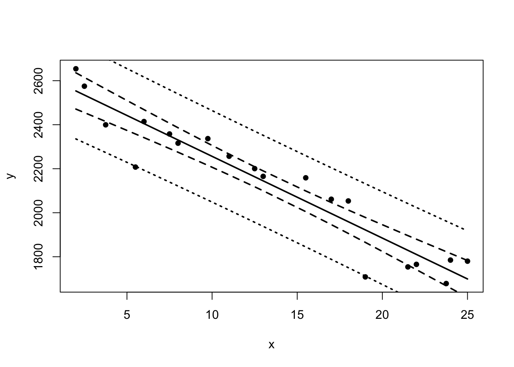
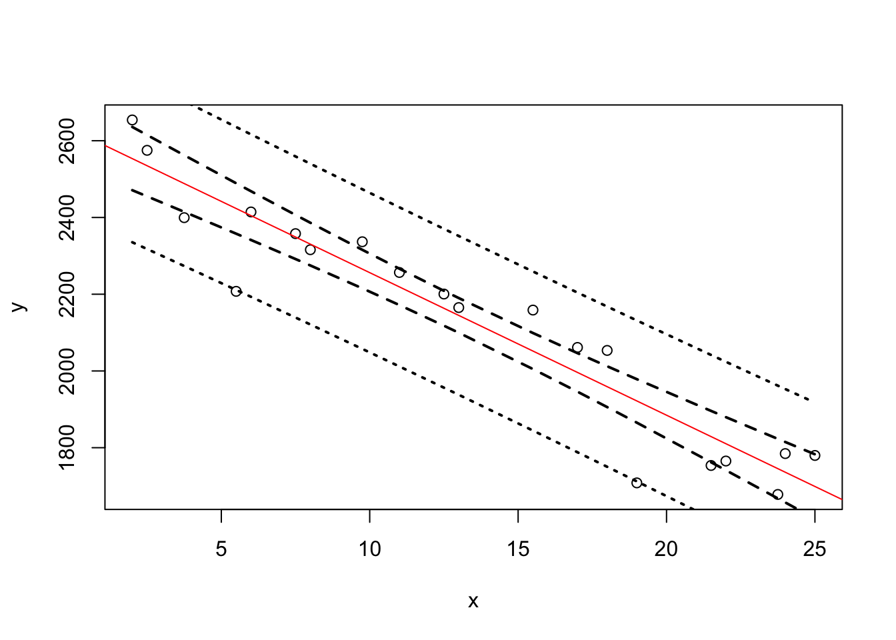

I am using R Studio for class examples which is more user friendly. The computation core is still R. It is okay if you want to use and familiar with others, but I may not provide full assistance. R can be downloaded from https://www.r-project.org/. RStudio is from https://rstudio.com/.
# setwd("G:/Desktop/rsite/stat464") # set working directory
# install.packages("MPV")
library(MPV) # data in the appendix## Loading required package: lattice## Loading required package: KernSmooth## KernSmooth 2.23 loaded
## Copyright M. P. Wand 1997-2009# install.packages("scatterplot3d") # Install
library("scatterplot3d") # load
# install.packages("installr")
library(installr) ##
## Welcome to installr version 0.23.2
##
## More information is available on the installr project website:
## https://github.com/talgalili/installr/
##
## Contact: <tal.galili@gmail.com>
## Suggestions and bug-reports can be submitted at: https://github.com/talgalili/installr/issues
##
## To suppress this message use:
## suppressPackageStartupMessages(library(installr))#install.packages("xlsx")
library(readxl)
p2.7## purity hydro
## 1 86.91 1.02
## 2 89.85 1.11
## 3 90.28 1.43
## 4 86.34 1.11
## 5 92.58 1.01
## 6 87.33 0.95
## 7 86.29 1.11
## 8 91.86 0.87
## 9 95.61 1.43
## 10 89.86 1.02
## 11 96.73 1.46
## 12 99.42 1.55
## 13 98.66 1.55
## 14 96.07 1.55
## 15 93.65 1.40
## 16 87.31 1.15
## 17 95.00 1.01
## 18 96.85 0.99
## 19 85.20 0.95
## 20 90.56 0.98head(p2.7)## purity hydro
## 1 86.91 1.02
## 2 89.85 1.11
## 3 90.28 1.43
## 4 86.34 1.11
## 5 92.58 1.01
## 6 87.33 0.95example21 = read_excel("data/Chapter 2/Examples/data-ex-2-1 (Rocket Prop).xls") # read .xls file from local directory
colnames(example21) = c("Observation","Shear_Strength_psi","Age_of_Propellant_weeks")
example21## # A tibble: 20 x 3
## Observation Shear_Strength_psi Age_of_Propellant_weeks
## <dbl> <dbl> <dbl>
## 1 1 2159. 15.5
## 2 2 1678. 23.8
## 3 3 2316 8
## 4 4 2061. 17
## 5 5 2208. 5.5
## 6 6 1708. 19
## 7 7 1785. 24
## 8 8 2575 2.5
## 9 9 2358. 7.5
## 10 10 2257. 11
## 11 11 2165. 13
## 12 12 2400. 3.75
## 13 13 1780. 25
## 14 14 2337. 9.75
## 15 15 1765. 22
## 16 16 2054. 18
## 17 17 2414. 6
## 18 18 2200. 12.5
## 19 19 2654. 2
## 20 20 1754. 21.5head(example21)## # A tibble: 6 x 3
## Observation Shear_Strength_psi Age_of_Propellant_weeks
## <dbl> <dbl> <dbl>
## 1 1 2159. 15.5
## 2 2 1678. 23.8
## 3 3 2316 8
## 4 4 2061. 17
## 5 5 2208. 5.5
## 6 6 1708. 19attach(example21)
y = example21$Shear_Strength_psi
x = example21$Age_of_Propellant_weeks
n = length(x)
plot(Age_of_Propellant_weeks,Shear_Strength_psi,pch = 16)
Our model is \[ Y = \beta_0+\beta_1 X+\epsilon. \]
Here, \(Y\) is Shear_Strength_psi and \(X\) is Age_of_Propellant_weeks. We can compute what we want directly from definitaions \[ S_{xx} = \sum_{i=1}^n(x_i-\bar{x})^2\\ S_{xy} = \sum_{i = 1}^ny_i(x_i-\bar{x})=\sum_{i=1}^nx_iy_i-\bar{x}\sum_{i=1}^ny_i\\ \hat{\beta}_1 = \frac{S_{xy}}{S_{xx}}\\ \hat{\beta}_0 = \bar{y}-\hat{\beta}_1\bar{x}. \]
sxx = sum(x^2)-sum(x)^2/n;sxx## [1] 1106.559sxy = sum(x*y)-sum(x)*sum(y)/n;sxy## [1] -41112.65beta1 = sxy/sxx;beta1## [1] -37.15359beta0 = mean(y)-beta1*mean(x)
c(beta0,beta1)## [1] 2627.82236 -37.15359error = y-(beta0+beta1*x)
plot(error);hist(error)
We can use R packages to do most of the work in the future. Most softwares have packages for linear model. In lm function, we have everything we want in the output summary.
model1 = lm(Shear_Strength_psi ~ Age_of_Propellant_weeks,data = example21)
summary(model1)##
## Call:
## lm(formula = Shear_Strength_psi ~ Age_of_Propellant_weeks, data = example21)
##
## Residuals:
## Min 1Q Median 3Q Max
## -215.98 -50.68 28.74 66.61 106.76
##
## Coefficients:
## Estimate Std. Error t value Pr(>|t|)
## (Intercept) 2627.822 44.184 59.48 < 2e-16 ***
## Age_of_Propellant_weeks -37.154 2.889 -12.86 1.64e-10 ***
## ---
## Signif. codes: 0 '***' 0.001 '**' 0.01 '*' 0.05 '.' 0.1 ' ' 1
##
## Residual standard error: 96.11 on 18 degrees of freedom
## Multiple R-squared: 0.9018, Adjusted R-squared: 0.8964
## F-statistic: 165.4 on 1 and 18 DF, p-value: 1.643e-10For example, we know the variance of slope \(\beta_0\) is \[Var(\hat{\beta_1})=\frac{\sigma^2}{S_{xx}}\]. The test statistic of \(\beta_0\) is \[ t_0 = \frac{\hat{\beta_0}-\beta_{00}}{\sqrt{MS_{Res}(1/n+\bar{x}^2/S_{xx})}}. \] p-value is given by \[P(T>t_0).\] Let’s do it by hand.
sst = sum((y-mean(y))^2);sst## [1] 1693738ssres = sum(error^2);ssres## [1] 166254.9varBeta1 = (ssres/(n-2))/sxx;sqrt(varBeta1) # variance of \beta_1## [1] 2.889107sdOfBeta1 = sqrt(ssres/(n-2)*(1/sxx))
sdOfBeta0 = sqrt(ssres/(n-2)*(1/n+mean(x)^2/sxx))
t0 = (beta0-0)/sdOfBeta0;t0## [1] 59.47464pt(-t0,n-2)## [1] 2.03178e-22Similarly, lm returns everything else as we want. (We will meet Adjusted R-squared later).
Let \(\alpha = 0.05\), the \((1-\alpha)100\%=95\%\) confidence interval (C.I.) of \(\beta_1\) is \((-43.22 -31.08)\), given by
c(beta1+qt(0.025,n-2)*sdOfBeta1,beta1-qt(0.025,n-2)*sdOfBeta1)## [1] -43.22338 -31.08380We predict the average response at point \(x_0\) with its corresponding confidence interval. For all \(x_i,i=1,...,n\), we can create a confidence band.
yhat = beta0+beta1*x
plot(x,y,pch=16)
lines(x,yhat)
x0 = 15;yhat0 = beta0+beta1*x0
ciPoint = c(yhat0-qt(0.025,n-2)*sqrt(ssres/(n-2)*(1+1/n+(x0-mean(x))^2/sxx)),
yhat0+qt(0.025,n-2)*sqrt(ssres/(n-2)*(1+1/n+(x0-mean(x))^2/sxx)))
points(x0,yhat0,pch=2,cex=2);points(c(x0,x0),ciPoint,pch = 8)
yhatSort = beta0+beta1*sort(x)
ciBand = cbind(yhatSort-qt(0.025,n-2)*sqrt(ssres/(n-2)*(1/n+(sort(x)-mean(x))^2/sxx)),
yhatSort+qt(0.025,n-2)*sqrt(ssres/(n-2)*(1/n+(sort(x)-mean(x))^2/sxx)))
ciPredBand = cbind(yhatSort-qt(0.025,n-2)*sqrt(ssres/(n-2)*(1+1/n+(sort(x)-mean(x))^2/sxx)),
yhatSort+qt(0.025,n-2)*sqrt(ssres/(n-2)*(1+1/n+(sort(x)-mean(x))^2/sxx)))
plot(x,y,pch=16)
lines(x,yhat,lwd = 2)
lines(sort(x),ciBand[,1],type = 'l',lty = 'dashed',lwd = 2)
lines(sort(x),ciBand[,2],type = 'l',lty = 'dashed',lwd = 2)
lines(sort(x),ciPredBand[,1],type = 'l',lty = 'dotted',lwd = 2)
lines(sort(x),ciPredBand[,2],type = 'l',lty = 'dotted',lwd = 2)
Of course, we have simple way.
confint(model1)## 2.5 % 97.5 %
## (Intercept) 2534.99540 2720.6493
## Age_of_Propellant_weeks -43.22338 -31.0838newData = data.frame(Age_of_Propellant_weeks = sort(Age_of_Propellant_weeks))
bandOfConf = predict(model1, newdata = newData, interval = 'confidence')# "confidence"
bandOfPred = predict(model1, newdata = newData, interval = 'prediction')# "confidence"
xOrdered = newData$Age_of_Propellant_weeks
plot(x,y)
abline(model1, col = "red")
lines(xOrdered,bandOfConf[,2],type = 'l',lty = 'dashed',lwd = 2)
lines(xOrdered,bandOfConf[,3],type = 'l',lty = 'dashed',lwd = 2)
lines(xOrdered,bandOfPred[,2],type = 'l',lty = 'dotted',lwd = 2)
lines(xOrdered,bandOfPred[,3],type = 'l',lty = 'dotted',lwd = 2)
If we want to estimate the line through the origin, we can do the following
{r} # example22 = read_excel("data/Chapter 2/Problems/data-prob-2-10.XLS") # example22 # head(example22) # attach(example22) # y = example22$Times # x = example22$Cases_Stocked # n = length(x) # plot(Cases_Stocked,Times,pch = 16) # model2 = lm(Times ~ 0+ Cases_Stocked,data = example22) # summary(model2) # yhat = predict(model2,newdata = example22) # plot(x,y,pch=16) # lines(x,yhat) # model2 = lm(Times ~ 1+ Cases_Stocked,data = example22) # summary(model2) # yhat = predict(model2,newdata = example22) # plot(x,y,pch=16) # lines(x,yhat) #{r,echo=F,include = F} # library(plotly) # library(tidyr) # library(dplyr) # library(car) # library(reshape2) # library(scatterplot3d) # library(qpcR) # library(MASS) # library(nlme) # library(olsrr) #{r} # example31 = read.table("Table3_2.txt",header = T) # read .txt file from local directory # x = cbind(1,example31$Number_Of_Cases,example31$Distance) # y = example31$Delivery_Time # pairs(example31) # scatterplot3d(example31$Number_Of_Cases,example31$Distance,example31$Delivery_Time,pch = 16, color="steelblue",type="h") # plot_ly(example31, x = ~Number_Of_Cases, y = ~Distance, z = ~Delivery_Time, # type = "scatter3d", mode = 'markers') %>% layout(title = "Delivery = Cases + Distance") #{r} # attach(example31) # model31 = lm(Delivery_Time ~ Distance +Number_Of_Cases, data = example31) # summary(model31) # anova(model31) # Anova(model31) #{r} # model31.1 = lm(Delivery_Time ~ Number_Of_Cases , data = example31) # anova(model31.1,model31) # model31.2 = lm(Delivery_Time ~ Distance , data = example31) # anova(model31.2,model31) #{r} # linearHypothesis(model31,"2*Distance = Number_Of_Cases") # testMatrix = c(0,1,-2) # rhs = c(0) # linearHypothesis(model31,testMatrix,rhs = rhs) # testMatrix = matrix(c(1,0,-1,1,0,-1),2,3) # testMatrix # rhs = c(0,0) #This indicates the following test setting \[ \begin{pmatrix} 1 & -1 & 0\\ 0 & 1 & -1 \end{pmatrix} \begin{pmatrix} \beta_0\\ \beta_1\\ \beta_2 \end{pmatrix}= \begin{pmatrix} 0\\ 0 \end{pmatrix}. \] This is also equivalent to \[ \begin{matrix} \beta_0-\beta_1 = 0\\ \beta_1-\beta_2 = 0 \end{matrix}. \]
{r} # linearHypothesis(model31,testMatrix,rhs = rhs) #library(car), you have a simple way to compute the joint confidence region. You will observe huge difference when investigating categorical data.{r} # # Extrapolation # x = cbind(1,example31$Number_Of_Cases,example31$Distance) # newPoint = c(1,15,500) # newPoint # hmax = max(diag(x%*%solve(t(x)%*%x))%*%t(x)) # t(newPoint)%*%solve(t(x)%*%x)%*%(newPoint);t(newPoint)%*%solve(t(x)%*%x)%*%(newPoint)<=hmax # influence.measures(model31) # # Standardize # scale(x,center = T,scale = T) # (x - matrix(1,25,1)%*%apply(x,2,mean))/(matrix(1,25,1)%*%apply(x,2,sd)*sqrt(25-1)) # # VIF, from car package # vif(model31) # bpData = read.table("bloodpress.txt",header = T) # pairs(bpData) # cor(bpData[,-1]) # model41.1 = lm(BP ~ BSA,data = bpData) # summary(model41.1) # model41.2 = lm(BP ~ . - Pt,data = bpData) # summary(model41.2) # vif(model41.2) # model41.3 = lm(BP ~ . - Pt -BSA,data = bpData) # summary(model41.3) # vif(model41.3) #{r} # plot(model31) # resid(model31) # rstudent(model31) # rstandard(model31) # studres(model31) # from MASS package # stdres(model31) # ols_plot_resid_stud(model31) # from olsrr package # qqnorm(resid(model31));qqline(resid(model31)) # qqnorm(rstudent(model31));qqline(rstudent(model31)) # qqnorm(rstandard(model31));qqline(rstandard(model31)) # qqnorm(studres(model31));qqline(studres(model31)) # # Added variable plots, Partial regression plot # avPlots(model31, 'Distance') # avPlots(model31, 'Number_Of_Cases') # # Component + residual plots, Partial residual plot # crPlots(model31, 'Distance') # crPlots(model31, 'Number_Of_Cases') # # PRESS statistic, qpcR package # PRESS(model31) # sum((resid(model31)/(1 - lm.influence(model31)$hat))^2) # # outliers # plot(fitted(model31),resid(model31),pch = 16);abline(0, 0,lty = 2) # plot(fitted(model31),rstudent(model31),pch = 16);abline(0, 0,lty = 2) # plot(fitted(model31),rstandard(model31),pch = 16);abline(0, 0,lty = 2) #{r} # example51 = read.table("Table5_1.txt",header = T) # read .txt file from local directory # model51 = lm(y ~ x, data = example51) # plot(fitted(model51),resid(model51),pch = 16);abline(0, 0,lty = 2) # example51$ystar = sqrt(example51$y) # model51.1 = lm(ystar ~ x, data = example51) # plot(fitted(model51.1),resid(model51.1),pch = 16);abline(0, 0,lty = 2) #{r} # example52 = read.table("Table5_2.txt",header = T) # read .txt file from local directory # model52 = lm(DC_Output ~ Wind_Velocity, data = example52) # plot(fitted(model52),resid(model52),pch = 16);abline(0, 0,lty = 2) # # I'm using boxcox function from MASS package. There is also a function in car package # boxcoxResult = boxcox(DC_Output ~ Wind_Velocity, data = example52, lambda = seq(-2,5,0.5)) # boxcox(DC_Output ~ Wind_Velocity, data = example52, lambda = seq(-2,5,0.5)) # lambda = boxcoxResult$x[which.max(boxcoxResult$y)] # example52$yboxcox = (example52$DC_Output^lambda-1)/lambda # model52.1 = lm(yboxcox ~ Wind_Velocity, data = example52) # plot(fitted(model52.1),resid(model52.1),pch = 16);abline(0, 0,lty = 2) # example52$x2 = example52$Wind_Velocity^2 # model52.2 = lm(DC_Output ~ Wind_Velocity + x2, data = example52) # plot(fitted(model52.2),resid(model52.2),pch = 16);abline(0, 0,lty = 2) # model52.3 = lm(DC_Output ~ Wind_Velocity, data = example52) # example52$w = example52$Wind_Velocity*log(example52$Wind_Velocity) # example52$xstar = (example52$Wind_Velocity+1) # model52.4 = lm(DC_Output ~ 0 + xstar + w, data = example52) # alphaHat = model52.4$coefficients[2]/model52.3$coefficients[2]+1 #The dashed line defines the 95% confidence interval of \(\lambda\).
Next we show GLS and WLS.
{r} # # Fit OLS # example53 = read.table("Table5_9.txt",header = T) # model53 = lm(Income ~ Advertising_Expense,data = example53) # plot(fitted(model53),resid(model53),pch = 16);abline(0, 0,lty = 2); # # Investigate variance change # example53$group = c(rep(1,3),rep(2,2),3,rep(4,5),rep(5,6),rep(6,6),rep(7,2),8,rep(9,4)) # example53.1 = aggregate(example53$Advertising_Expense,by = list(example53$group), mean) # plot(example53$Advertising_Expense,example53$Income,pch = 16);abline(v = example53.1$x,lty = 3,col = 'blue') # ysd = aggregate(example53$Income,by = list(example53$group), sd) # example53.1$yvar = ysd$x^2 # # Fit weight # model53.variance = lm(yvar ~ x,data = example53.1) # plot(fitted(model53.variance),resid(model53.variance),pch = 16);abline(0, 0,lty = 2); # weight = 1/predict(model53.variance,newdata = data.frame(x=example53$Advertising_Expense)) # # Fit WLS # model53.2 = lm(Income ~ Advertising_Expense,data = example53, weights = weight) # plot(x=example53$Advertising_Expense, y=example53$Income, # panel.last = c(lines(sort(example53$Advertising_Expense), # fitted(model53)[order(example53$Advertising_Expense)], col="blue"), # lines(sort(example53$Advertising_Expense), # fitted(model53.2)[order(example53$Advertising_Expense)],col="red"))) # legend("topleft", col=c("blue","red"), lty=1, # inset=0.02, legend=c("OLS", "WLS")) # plot(fitted(model53.2)*sqrt(weight),resid(model53.2)*sqrt(weight),pch = 16);abline(0, 0,lty = 2); # summary(model53) # summary(model53.2) # # Straightforward way when we have other variance structure (gls in nlme packages) # model53.3 = gls(Income ~ Advertising_Expense,data = example53,correlation = corAR1(form = ~ 1 )) # summary(model53.3) #{r} # plot(hatvalues(model31));abline(0.3,0,lty = 2) # plot(cooks.distance(model31));abline(0.1,0,lty = 2) # plot(dffits(model31),pch = 16);abline(0.5,0,lty = 2) # plot(dfbetas(model31));abline(1,0,lty = 2) # plot(covratio(model31)) # plot(model31) #{r} # # orthogonal polynomial # example71 = read.table("Table7_1.txt",header = T) # example71$Hardwood_Concentration_centered = example71$Hardwood_Concentration-mean(example71$Hardwood_Concentration) # plot(example71$Hardwood_Concentration,example71$Tensile_Strength,pch = 16) # model7.1 = lm(Tensile_Strength ~ Hardwood_Concentration + I(Hardwood_Concentration^2), data = example71) # summary(model7.1) # model7.1.centered = lm(Tensile_Strength ~ Hardwood_Concentration_centered + I(Hardwood_Concentration_centered^2), data = example71) # summary(model7.1.centered) # # orthogonal polynomial # orthPoly = poly(example71$Hardwood_Concentration, degree = 3) # model7.1 <- lm(Tensile_Strength ~ poly(Hardwood_Concentration,2), data = example71) #Notice that \[ X^\star = X^TW, \] where \(W\) is the \(k+1\)-by-\(k+1\) transfer matrix given by \[\begin{align} F_0(x) &= \frac{1}{\sqrt{n_2}}\\ F_1(x) &= \frac{x-a_1}{\sqrt{n_3}}\\ ...\\ F_k(x) &= \frac{(x-a_k) * \sqrt{n_{k+1}} * F_{k-1}(x) - n_{k+1} / \sqrt{n_k} * F_{k-2}(x)}{\sqrt{n_{k+2}}}, \end{align}\] \(X^\star\) is the matrix of \(k+1\) orthogonal polynomials and $X=[1X2X3…X^k] $ is the original polynomial. The goal is to find \(W\) and \[ \beta = W\alpha, \text{ or } \alpha = W^{-1}\beta. \]
{r} # library(ggplot2) # example81 = as.data.frame(read.table("Table8_1.txt",header = T)) # ggplot(example81) + # geom_point(aes(y = hours, x = rpm, group = as.factor(tool), color = tool),size = 6) # model8.1.nogroup = lm(hours ~ rpm, data = example81) # summary(model8.1.nogroup) # model8.1.linear = lm(hours ~ rpm + factor(tool), data = example81) # summary(model8.1.linear) # model8.1.interaction = lm(hours ~ rpm * factor(tool), data = example81) # you can try a:b # summary(model8.1.interaction) # # test the difference between groups # anova(model8.1.nogroup,model8.1.interaction) # anova(model8.1.linear,model8.1.interaction) # # multi level indicators # iris # ggplot(iris) + # geom_point(aes(y = Sepal.Length, x = Petal.Length, group = Species, color = Species),size = 6) # model8.2 = lm(Sepal.Length ~ Petal.Length * Species, data = iris) # summary(model8.2) #{r} # options(width = 1300) # example91 = data.frame(read.table("Table9_1.txt",header = T)) # pairs(example91) # example91$temperature = (example91$temperature-1212.5)/80.623 # example91$ratio_of_H2 = (example91$ratio_of_H2-12.44)/5.662 # example91$time = (example91$time-0.0403)/0.03164 # model9.1 = lm(conversion ~ polym(temperature, ratio_of_H2, time, degree=2, raw=TRUE), data = example91) # summary(model9.1) # # X'X # xMatrix = scale(polym(example91$temperature, example91$ratio_of_H2, example91$time, degree=2, raw=TRUE),center = T,scale = T) # cov(xMatrix) # # VIF # example91.all = data.frame(cbind(example91[,1],xMatrix)) # colnames(example91.all)[1] = "conversion" # model9.1.another = lm(conversion ~ ., data = example91.all) # vif(model9.1.another) # # eigensystem # library(klaR) # cond.index(conversion ~ ., data = example91.all) # ols_eigen_cindex(model9.1.another) # xMatrix = polym(example91$temperature, example91$ratio_of_H2, example91$time, degree=2, raw=TRUE) # eigenValues = eigen(cor(scale(xMatrix,center = F,scale = F)))$values # max(eigenValues)/eigenValues # # determinant # det(cov(xMatrix)) #{r} # library(glmnet) # library(reshape2) # lambdas = 10^seq(2, -3, by = -.1) # model9.1.ridge = glmnet(xMatrix, example91$conversion, nlambda = 25, alpha = 0, family = 'gaussian', lambda = lambdas) # ridge.Par = as.data.frame(as.matrix(cbind(lambdas,t(model9.1.ridge$beta)))) # ridge.plotData = melt(ridge.Par,id = "lambdas",measure.vars = colnames(ridge.Par)[2:10]) # ggplot(ridge.plotData) + # geom_line(aes(y = value, x = lambdas, group = variable, color = variable),size = 1) + # geom_point(aes(y = value, x = lambdas, group = variable, color = variable),size = 2) + # labs(title="Ridge") # # select a good lambda # model9.1.cvRidge = cv.glmnet(xMatrix, example91$conversion, alpha = 0, lambda = lambdas) # plot(model9.1.cvRidge) # model9.1.cvRidge$lambda.min # model9.1.ridge.opt = glmnet(xMatrix, example91$conversion, nlambda = 25, alpha = 0, family = 'gaussian', lambda = model9.1.cvRidge$lambda.min) # summary(model9.1.ridge.opt) # model9.1.ridge.opt$beta # library(lmridge) # published 2018 # model9.1.ridge2 = lmridge(conversion ~ ., data = example91.all, K = model9.1.cvRidge$lambda.min) # summary(model9.1.ridge2) # # PCR # library(pls) # model9.1.pcr = pcr(conversion~., data = example91.all, ncomp = 4, validation = "CV") # summary(model9.1.pcr) # model9.1.pcr$projection # validationplot(model9.1.pcr,val.type = "R2") # abline(v=1:9,lty = 3, lwd = 0.2) #{r} # example101 = data.frame(read.table("b21.txt",header = T)) # model10.1.full = lm(y ~ ., data = example101) # AIC(model10.1.full);BIC(model10.1.full);ols_mallows_cp(model10.1.full,model10.1.full) # all.regression = ols_step_all_possible(model10.1.full) #package olsrr # plot(all.regression) # data.frame(AIC = all.regression$aic,PRESS = all.regression$predrsq,BIC = all.regression$sbic) # # best subset # library(leaps) # bestSubset = regsubsets(y ~ ., data = example101, nvmax = 4) # summary(bestSubset) # res = summary(bestSubset) # ols_step_best_subset(model10.1.full) # # stepwise # bestSubset.forward = regsubsets(y ~ ., data = example101, nvmax = 4, method="backward") # summary(bestSubset.forward) # model10.1.step.forward = stepAIC(model10.1.full, direction = "backward", trace = T) # model10.1.step.forward = step(lm(y ~ x1, data = example101), direction="forward", scope=model10.1.full) # model10.1.step.backward = step(model10.1.full, direction="backward", scope=lm(y ~ 1, data = example101)) # model10.1.step.both = step(model10.1.full, direction="both", scope=model10.1.full) # ols_step_forward_p(model10.1.full, details = T) # ols_step_backward_p(model10.1.full, details = T) # ols_step_both_p(model10.1.full, details = T) # ols_step_both_aic(model10.1.full, details = T) # # LASSO # library(glmnet) # lambdas = 10^seq(1, -3, by = -.05) # model9.1.LASSO = cv.glmnet(xMatrix, example91$conversion, alpha = 1, lambda = lambdas) # plot(model9.1.LASSO) # lasso.Par = as.data.frame(as.matrix(cbind(lambdas,t(model9.1.LASSO$glmnet.fit$beta)))) # lasso.plotData = melt(lasso.Par,id = "lambdas",measure.vars = colnames(lasso.Par)[2:10]) # ggplot(lasso.plotData) + # geom_line(aes(y = value, x = lambdas, group = variable, color = variable),size = 1) + # geom_point(aes(y = value, x = lambdas, group = variable, color = variable),size = 2) + # labs(title="LASSO") # # Elastic Net # model9.1.eNet = cv.glmnet(xMatrix, example91$conversion, alpha = 0.5, lambda = lambdas) # plot(model9.1.eNet) # eNet.Par = as.data.frame(as.matrix(cbind(lambdas,t(model9.1.eNet$glmnet.fit$beta)))) # eNet.plotData = melt(eNet.Par,id = "lambdas",measure.vars = colnames(eNet.Par)[2:10]) # ggplot(eNet.plotData) + # geom_line(aes(y = value, x = lambdas, group = variable, color = variable),size = 1) + # geom_point(aes(y = value, x = lambdas, group = variable, color = variable),size = 2) + # labs(title="Elastic Net") #{r} # # Pneumoconiosis Data # example131 = data.frame(read.table("Table13_1.txt",header = T)) # example131$No_Other_Cases = round(example131$No_Severe_Cases/example131$Proportion_of_Severe_Cases-example131$No_Severe_Cases) # example131$No_Other_Cases[1] = 98 # ggplot(example131) + # geom_line(aes(y = Proportion_of_Severe_Cases, x = No_Years_of_Exposure),size = 1) + # geom_point(aes(y = Proportion_of_Severe_Cases, x = No_Years_of_Exposure),size = 2) + # stat_smooth(aes(y = Proportion_of_Severe_Cases, x = No_Years_of_Exposure), # method = "loess",formula = y ~ x, se = FALSE, color = 2) + # stat_smooth(aes(y = Proportion_of_Severe_Cases, x = No_Years_of_Exposure), # method = "lm",formula = y ~ poly(x,3), se = FALSE, color = 4) # model13.1 = glm(cbind(No_Severe_Cases,No_Other_Cases) ~ No_Years_of_Exposure, # family=binomial, data = example131) # summary(model13.1) # exp(coef(model13.1))# odds # exp(confint(model13.1))# C.I. of Odds ratio # vcov(model13.1)# variance-covariance matrix # residuals(model13.1, type="deviance")# pearson, working, response # example132 = data.frame(read.table("breastCancer.txt",header = T)) # model13.2.two = glm(case.control ~ weight + age, # family=binomial, data = example132) # model13.2.one = glm(case.control ~ age, # family=binomial, data = example132) # anova(model13.2.one,model13.2.two,test = "Chisq")#"LRT,Cp,F,Rao" #{r} # example133 = data.frame(read.table("patent.txt",header = T)) # ggplot(example133) + # geom_line(aes(y = patent, x = x3),size = 1) + # geom_point(aes(y = patent, x = x3),size = 2) + # stat_smooth(aes(y = patent, x = x3), # method = "loess",formula = y ~ x, se = FALSE, color = 2) + # stat_smooth(aes(y = patent, x = x3), # method = "lm",formula = y ~ poly(x,3), se = FALSE, color = 4) # model13.3 = glm(patent ~ x1 + x2 + x3, # family=poisson, data = example133) # summary(model13.3) #